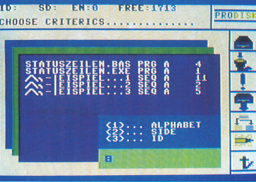
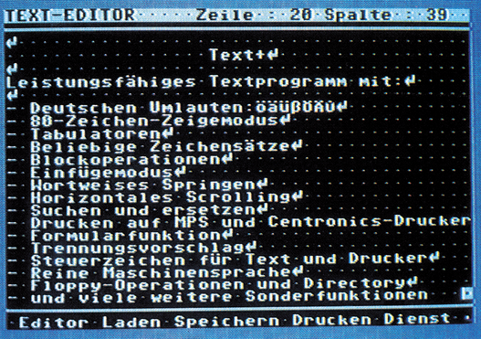
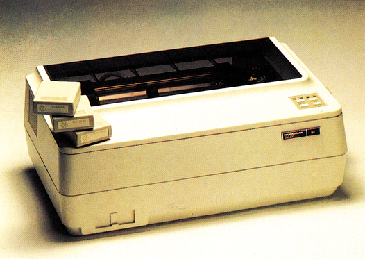

Vorschau
Datenbanken
Ein Schwerpunkt in der nächsten Ausgabe ist dem Thema »professionelle Datenbanken« gewidmet. Sie erfahren, wie man damit umgeht und wie man per Akustikkoppler oder Modem auf große öffentliche Datenbanken zugreifen kann. Eine ausführliche Marktübersicht stellt Datenbanksysteme und Dateiverwaltungen für die Commodore-Computer vor. Für alle C 128-Besitzer ein besonders interessantes Thema: Tips & Tricks zum Datenbanksystem dBase II.

Ein Hauch von 16 Bit
Den C 64 benutzerfreundlich zu machen war die Devise des amerikanischen Programmierteams von Berkeley Softworks. Dabei ist »Geos« herausgekommen, ein neues Betriebssystem, das den C 64 mit einer Benutzeroberfläche ausstattet, die an den Macintosh, Atari ST oder Amiga erinnert. Dazu wird umsonst eine Textverarbeitung mitgeliefert, die zudem noch zueinander passen. Wir nehmen »Geos« genau unter die Lupe und beantworten dabei die Frage: Wird der C 64 ein ernstzunehmender Konkurrent für 16-Bit-Computer?
Software-Tips
Haben Sie Probleme mit professionellen Programmen? Möchten Sie Ihren Drucker an verschiedene Programme anpassen? Wir helfen Ihnen — unser Software-Corner gibt Tips zu Superbase, Vizawrite 64 und Vizastar 64. Außerdem wird das Geheimnis von Vizaspell gelöst. In einer umfangreichen Vergleichstabelle können Sie die Befehle Ihres Druckers mit denen vieler anderer Drucker vergleichen. Das Umschreiben, beispielsweise eines MPS 801-Programms in ein Epson-Programm, wird dadurch unproblematisch.
Textverarbeitung zum Abtippen
Hypra-Text hat seinen Meister gefunden — wir veröffentlichen das ganz in Maschinesprache geschriebene Textprogramm »Text + «. Es bietet Funktionen wie horizontales Scrolling, 80 Zeichen-Zeigemodus, deutsche Umlaute, eingebaute Centronics- und RS232-Schnittstelle, Formulare, Trennvorschläge, Suchen/Ersetzen, Druckerparameter-Einstellung und vieles, vieles mehr.

Gutes aus deutschen Landen
Mannesmann-Tally ist in der Bürowelt seit langem bekannt. Der Drucker MT 86 ist deshalb ein sehr geräuscharmer Matrixdrucker, der mit Stolz das Markenzeichen »Made in Germany« trägt. Der MT 86 bietet zu akzeptablem Preis auch den Vorteil der Schriften-Module, mit denen sich das Zeichensatz-ROM des Druckers innerhalb von Sekunden austauschen läßt.

Programme unter Kontrolle
Die Anwendung des Monats ist ein komfortables Diskettenverwaltungsprogramm, das auch hohen Ansprüchen gerecht wird. Durch die komfortable Benutzeroberfläche und die Möglichkeit, 1745 Programmnamen zu verwalten und nach diversen Kriterien auszugeben, wird dieser mit Windowtechnik arbeitende Disksorter auch für Profis interessant.
Software wie nie
Es mag sein, daß es immer neue, immer bessere Computer gibt, in einer Beziehung werden Sie den C 64 nie erreichen — seine Softwarevielfalt. Darum gibt es in der nächsten Ausgabe auch eine ganze Menge brandheißer Software-Tests. Darunter befindet sich »Printfox«, ein deutsches Zeitungs-Druck-Programm mit überragenden Fähigkeiten. Ebenfalls im Test: »Print Master« von Unison World, dieses Programm soll den »Print Shop« überflüssig machen. Im dritten Test lassen wir zwei neue Module gegeneinander antreten: »The Final Cartridge« und »Power Cartridge« kommen beide aus Holland und versprechen eine Menge an Funktionen.